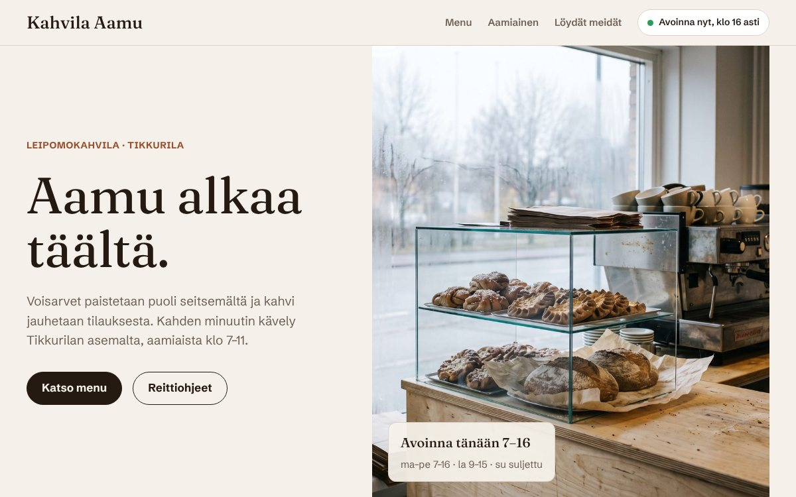

Konseptityö, kuvitteellinen asiakas
Kahvila Aamu, Tikkurila: kotisivut
Yksi sivu, jolla on kaikki, mitä kahvilan asiakas kysyy: aukioloajat, menu, aamiainen ja reitti. Avoinna-merkki päivittyy kellon mukaan. Kuvat on tuotettu tekoälyllä esimerkkiä varten.
Avatkaa demosivu →